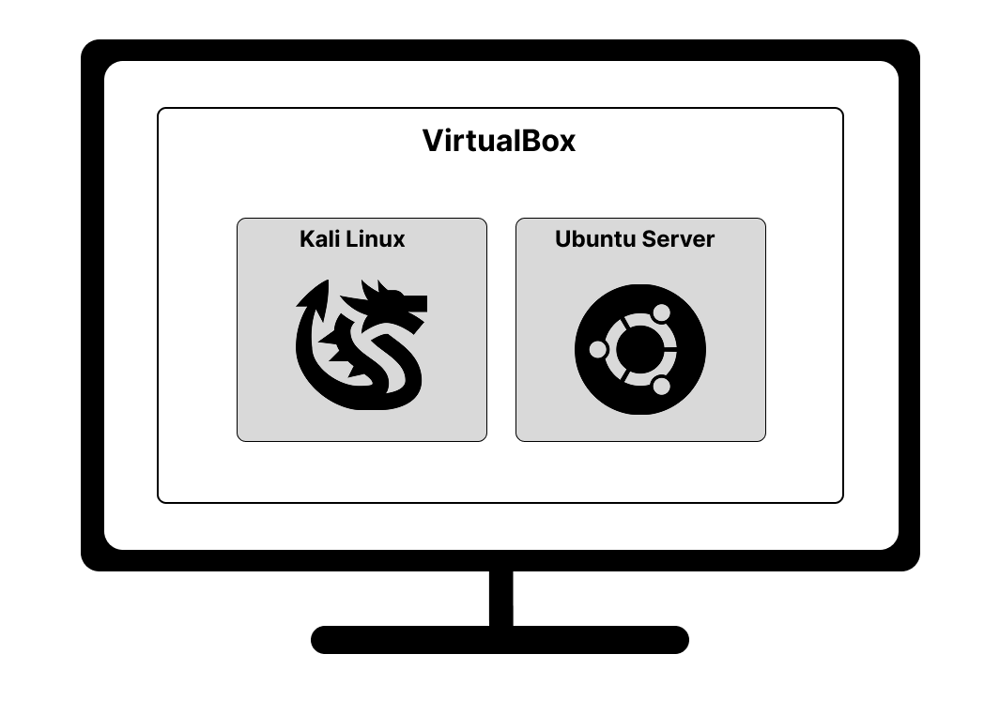
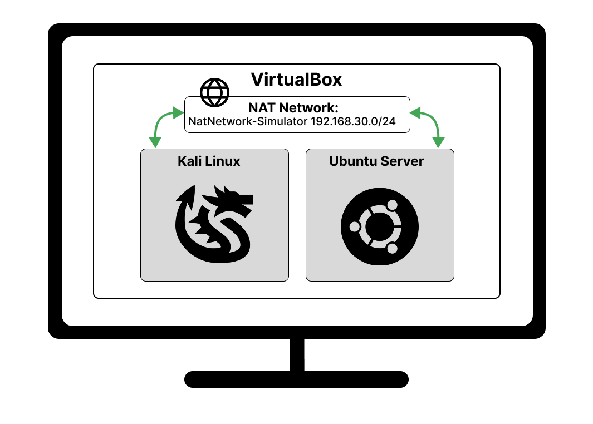

Setup
Before you dive into real attacks, you need a safe and controlled space to practice. This lab setup includes:
Time to get our virtual lab rolling! Download and install VirtualBox from the
official site:
https://www.virtualbox.org
Not sure how to install it? No worries! Google has your back. And as long as
these links play along, here's one great option for Windows users:
How to Install Virtualbox on Windows
Now that VirtualBox is ready, it's time to bring in our hacking toolbox: Kali Linux.
Head over to kali.org and download the VirtualBox image.
Need help with the setup? Google will gladly assist — or check out this
helpful YouTube guide:
How to Install Kali Linux on VirtualBox
Heads up: Sometimes, things don't go as smoothly as in the video. If Kali doesn't magically appear in VirtualBox after downloading, unzipping and clicking, don't panic. (Like I did when it first happened.) Just import it manually like we are also going to do in the next step:
VirtualBox → File → Import Appliance -> Choose the right file
That's it! You're almost there.
Ok, let's bring in our target! We'll be importing a pre-configured vulnerable server that you'll be testing during the simulation.
The server is called DaVivianCode-Server, and it's waiting for you to unleash your inner hacker. Download the virtual machine file (.ova) below and import it into VirtualBox.
Once downloaded:
Smooth, right? You just added your target machine to the lab. Just like that.
Right now we are here:
On our host machine we're running VirtualBox—a Type-2 hypervisor and virtualization platform—which hosts two VMs: Kali Linux and the DaVivianCode-Server, which is very much an Ubuntu server.
Problem: Currently Kali and DaVivian are like party guests on opposite sides of the room — time to connect the NAT network so they can mingle.
Alright, time for a little VirtualBox magic. This step lets Kali and our target server finally talk to each other inside your lab.
Nice! You've created your NAT network. But right now, your VMs are still like “uh... what's happening?” So let's plug them into the network. If your VMs are running, power them off first so we can adjust their settings safely.
Boom! Now both machines are on the same private network. They can chat with each other, but they're cut off from the outside world. Perfect for our safe and controlled hacking playground. Here's what your setup now looks like:
Ok, we are good to go!